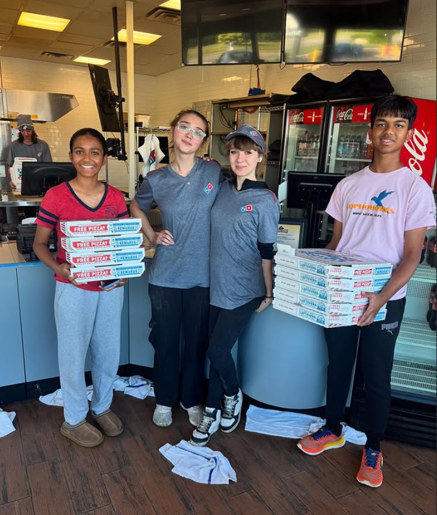

Pizza Donation from Dominos
Thanks to the generous donation from Dominos, we were able to bring fresh, hot pizzas to the Grace Center of Hope. This photo shows us preparing to deliver these meals to families and individuals who needed them most.
Community partnerships like this with local businesses make such a meaningful difference. Every pizza delivered represents not just a meal, but a moment of joy and the knowledge that the community cares about those facing difficult times.